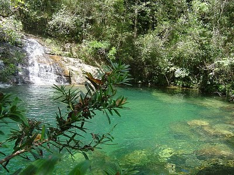

Roteiro de Trilhas e Expedições
1. Trilha do Pico da Neblina (Nível Avançado)

Uma caminhada desafiadora de 6 horas que recompensa com uma das vistas mais incríveis da cordilheira.
2. Circuito das Cachoeiras (Nível Iniciante/Familiar)

Trilha leve de 2 km perfeita para toda a família, com pontos para banho seguro e piquenique.
Condições do Clima em Tempo Real (Imagem Externa)